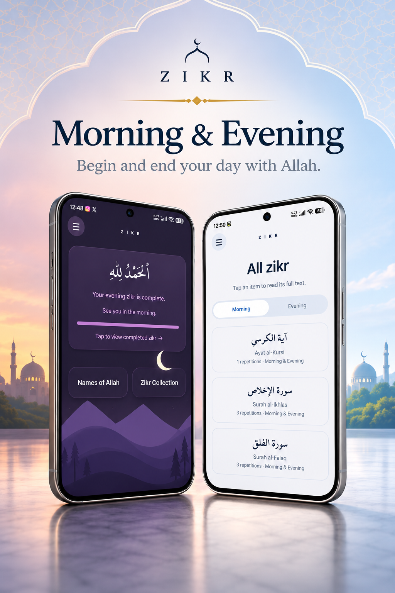
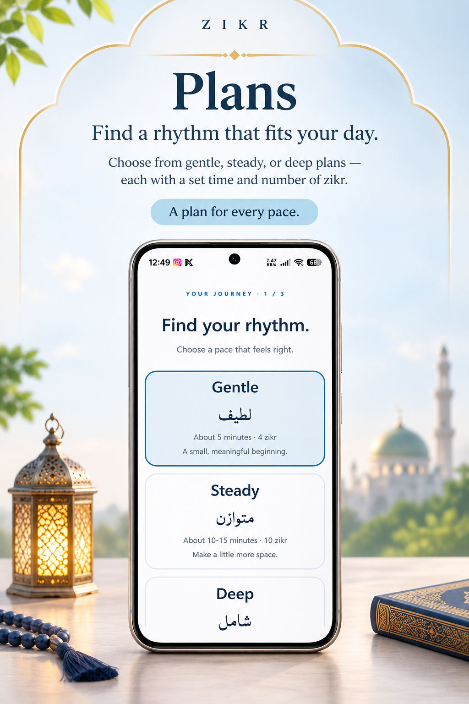
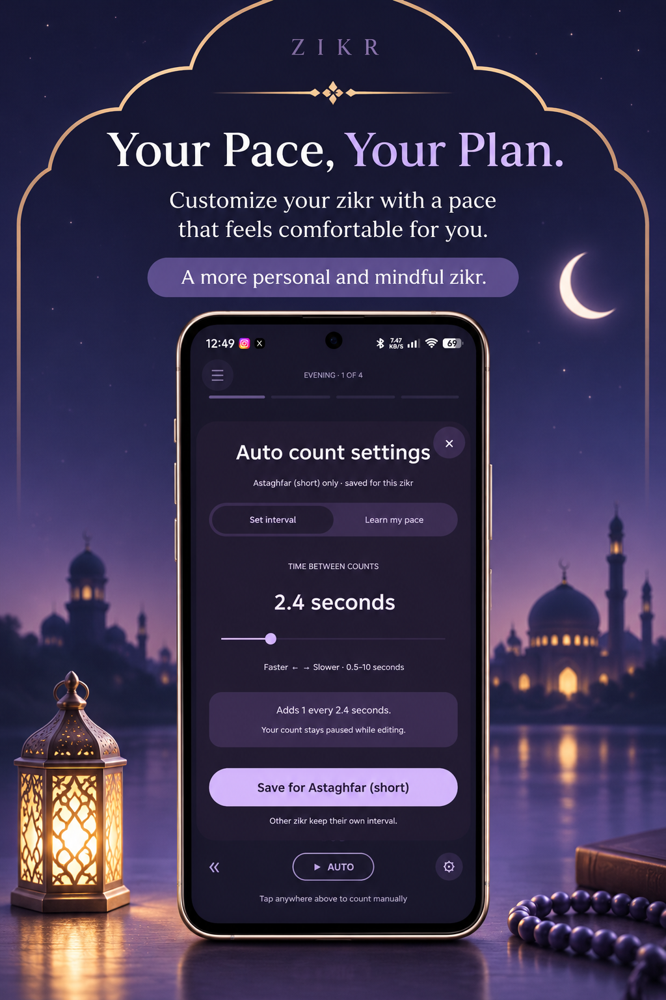
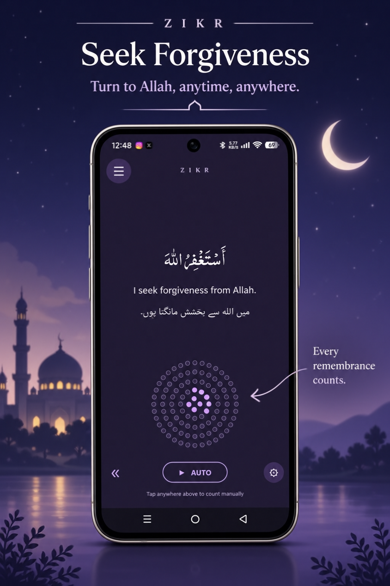

01
Mindful utility · Mobile app
Zikr
A calm, intentional companion for daily remembrance—designed to help a meaningful practice feel simple, focused and close at hand.
In development



Independent digital studio
We shape promising ideas into useful, beautifully considered digital products—from the first sketch to the thing people can actually use.
Small studio.
Clear thinking.
Useful outcomes.
We work at the intersection of product thinking, design and technology. No theatre—just careful decisions and steady progress toward something real.
Selected products
Mindful utility · Mobile app
A calm, intentional companion for daily remembrance—designed to help a meaningful practice feel simple, focused and close at hand.
In development



Data product · Web portal
A focused workspace that turns scattered numbers into a clear view—helping teams see what matters and make informed decisions faster.
In developmentHow we work
We listen, question and define the smallest version of the idea worth making.
We turn the concept into flows, interfaces and a working product people can experience.
We release thoughtfully, observe what matters and keep improving the useful parts.
Have an idea?